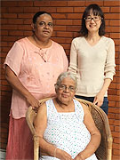
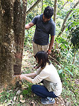
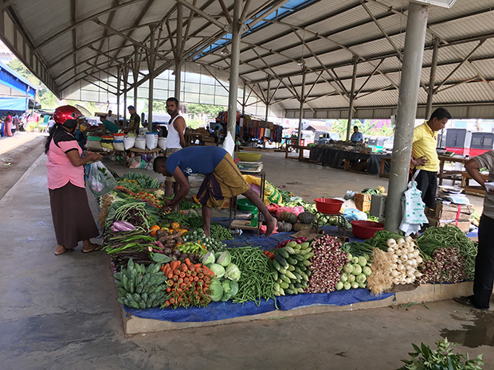
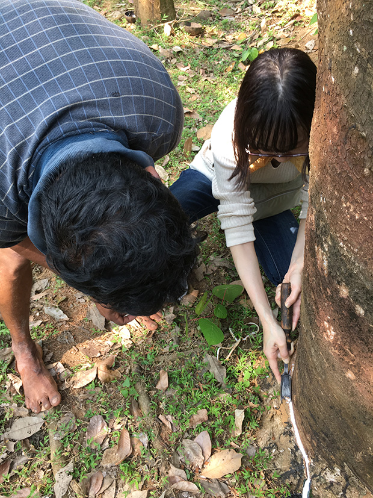

「初めての一人海外でしたが、事前のご連絡等で安心できました。
スリランカで、英語が学べて、ホームステイできるので、参加を決めました。
英語レッスンでは、レッスンを通して、スリランカの教育システムやアーユルヴェーダのこと、仏教のことと、私が興味のあることを知ることができて、満足しています。
スリランカのホームステイは、食事は辛いのが苦手なので、はじめに伝えました。
でも、スパイスの効用には興味があり、毎回の食事が楽しみでした。
チキンカレーの作り方も教えていただきました。
ホストファミリーとの生活は、短い期間でしたが、温かい方々で、お別れの時は寂しかったです。
低開発村視察ではゴム製造過程を見学、体験させていただきました。
自分の祖父母の家にもあったような釜戸やトイレ…、今の自分の生活とは異なりますが、見覚えのある景色も感じ取ることができました。
しかし、大自然の中、猿たちが近くまで来るということは、日本では経験できないことです。


特に印象的だったのは、そこにいらした方々の笑顔がステキだったことです。
よく笑い、とても楽しい時間を過ごすことができました。
スリランカに行くのは、今回は２回目でしたので、大体、想像はしていましたが、やっぱり魅力的な国だなと思いました。
マーケットでの野菜の陳列の整い方にはスリランカの方々の気質を感じました。
スリランカには、是非、また近いうちに行きたいと思います。
今回は日本語教師のボランティアができなかったので、次回はできるときに行きたいです。
生活に触れることができたこと、現地の方々と触れ合えたことは、他の観光ツアーでは体験できないかなと思います。
この度は大変、お世話になりました。
一週間の短い期間でしたが、とても充実した期間でした。
滞在先でも親切にしていただき、とても安心できました。
丁寧に対応していただき、感謝しています。」
